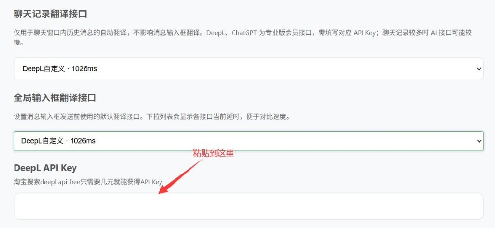
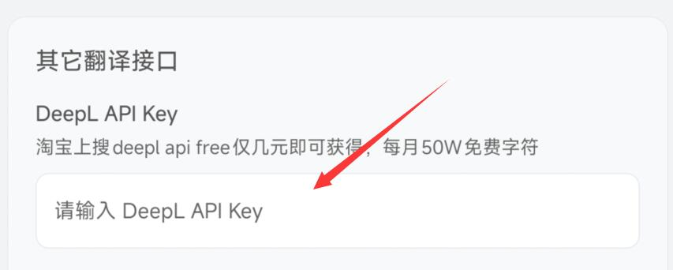

DeepL API 申请
专业版及以上可接入 DeepL，以获得更高质量的翻译效果。推荐先用下面的简单方法获取 Key。
方法一：淘宝购买（推荐 · 更简单）
直接在淘宝搜索 deepl api free，购买一个免费额度的 API Key，通常只要几元钱，每月约 50 万字符，足够日常聊天翻译使用。
- 打开淘宝，搜索 deepl api free。
- 选择信誉较好的店铺下单，按卖家说明获取 API Key。
- 将 Key 粘贴到 WATransChat（见下方「填入 WATransChat」）。
提示：不要分享你的 API key，防止泄露后产生意外费用或额度被占用。
方法二：官网自行申请
- 打开 DeepL API 申请页，注册并选择合适的 API 套餐。
- 在控制台创建并复制 Authentication Key（API Key）。
注意：免费版与 Pro 版 Key 格式 / 端点可能不同，请确认与套餐一致。
填入 WATransChat
浏览器扩展
路径：会员中心 → 翻译设置。 将「聊天记录翻译接口」和「全局输入框翻译接口」都选择为 DeepL自定义，下方会出现 DeepL API Key 输入框，粘贴即可。

手机端
路径：会员中心 → 翻译设置 → 其它翻译接口，找到 DeepL API Key，粘贴后保存。

还有问题？
若以上内容未能解决您的问题，欢迎联系客服获取一对一协助。